준비물: Claude Code, Higgsfield, Node.js
영상이 만드는 건 가상의 전기 자전거 회사 SierraVolt의 제품 사이트예요. 스크롤하면 3D 자전거가 돌아가고, 비 오는 산길 영상이 흐르고, 마지막에 시승 예약 폼이 나와요. 발표자는 코드를 한 줄도 손대지 않고 약 20분 만에 만들었다고 말해요. 다른 튜토리얼은 프롬프트를 여러 번 복사해 붙이거나 중간 단계를 빼먹는다는 게 이 영상의 문제의식이에요.
전체 구조는 단순해요. 사람은 말로 원하는 걸 설명하고 고르기만 해요. Claude Code가 프로젝트 폴더의 지시서를 읽고 작업을 진행하고, 미디어 생성과 배포는 커넥터 두 개가 맡아요.
flowchart LR P["사람: 말로 지시하고 고르기"] --> C["Claude Code (Opus 5.5)"] F["프로젝트 폴더의 CLAUDE.md"] --> C C --> H["Higgsfield 커넥터"] H --> M["이미지 · 3D 모델 · 영상"] C --> S["사이트 파일"] C --> K["Hostinger 커넥터"] K --> D["호스팅 · 내 도메인"]
Claude 데스크톱과 Pro 플랜
발표자에게 Claude Code를 쓰는 가장 쉬운 방법은 Claude 데스크톱 앱을 받는 거예요. claude.com/download에서 받고, 최소 Pro 플랜에 가입해 두면 된다고 해요. 발표자는 Pro를 월 17달러라고 소개해요. 작업은 모두 앱 왼쪽 위의 Code 탭에서 해요.
Higgsfield를 커넥터로 붙이기
Higgsfield는 여러 이미지·영상 생성 모델을 한곳에 모아 둔 서비스예요. 이 영상에서 미디어는 전부 여기서 나와요. Higgsfield 사이트 상단의 MCP(Model Context Protocol) 탭에 들어가면 위쪽에 Claude, ChatGPT, Claude Code 같은 대상 탭이 있어요. Claude 탭에서 'Connect Higgsfield'를 누르면 바로 연결되고, 그 아래 회색 주소 https://mcp.higgsfield.ai/mcp를 복사해 직접 연결할 수도 있어요.
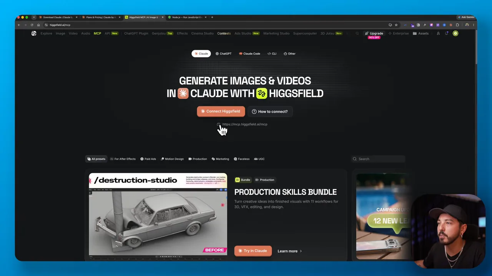
발표자는 직접 넣는 방법을 보여 줘요. Claude 데스크톱에서 Customize → Connectors로 가서 Add를 누르고 사용자 지정 커넥터를 고르면 아래 창이 떠요. 위 칸에 이름, 아래 칸에 복사한 주소를 넣고 Continue를 눌러요. 처음이면 Higgsfield 로그인 창이 떠서 내 계정을 Claude에 묶어 줘요.

연결되면 Connectors의 Yours 탭 목록에 Higgsfield가 'Custom' 표시와 함께 올라와요. 같은 목록에 나중에 쓸 Hostinger Connector도 'Community' 표시로 이미 보여요.
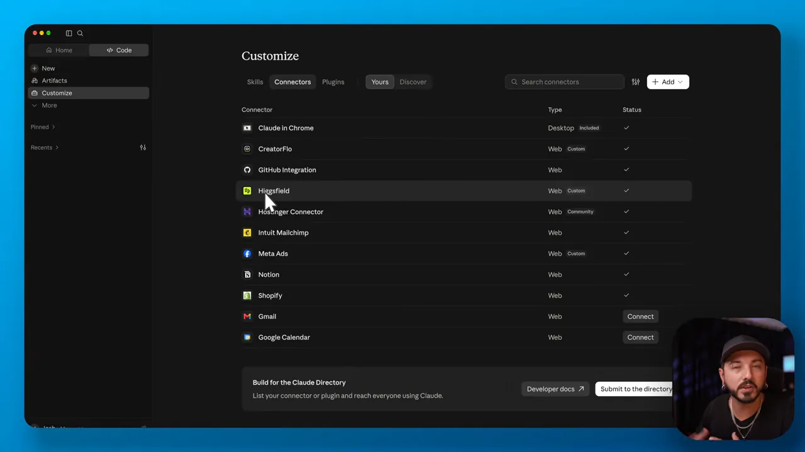
Node.js
마지막 준비물은 Node.js예요. 발표자는 이 과정이 매끄럽게 돌아가려면 필요한 무료 도구라고만 설명하고, nodejs.org에서 Mac 설치 파일을 받아 한 번 설치해요.
프로젝트 폴더와 지시서 파일
Code 탭에서 새 세션을 열면 먼저 폴더를 정해요. 발표자는 프로젝트마다 폴더를 따로 만들어요. 입력창 아래 폴더 아이콘 → Open folder에서 websites 폴더 안에 SierraVolt E-Bikes를 새로 만들어 열었어요.
그러면 '이 워크스페이스를 신뢰할까요?' 창이 떠요. Claude Code가 이 폴더의 파일을 읽고, 쓰고, 실행할 수 있다는 확인이에요. 가운데에 폴더 경로가 보이고, 오른쪽 Trust workspace를 눌러요.
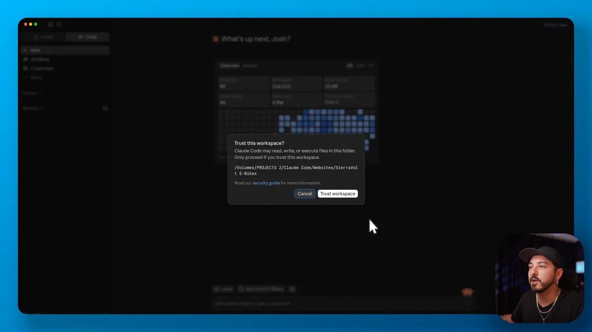
지시서 파일 한 장으로 흐름 잡기
프롬프트를 입력하기 전에, 영상 설명란에서 받은 CLAUDE.md를 이 폴더에 넣어요. 발표자는 이 파일을 '스킬 파일'이라고 부르는데, 사이트를 어떤 사양으로 어떤 순서로 만들지 길게 적은 지시서예요. 오른쪽 창에 열린 파일을 보면 브랜드 이름, 슬로건, 색상, 폰트 같은 항목 규칙이 번호로 이어지고, 아래쪽에 Phase 2 of 6 — The hero still and the experience 같은 단계 제목이 보여요.
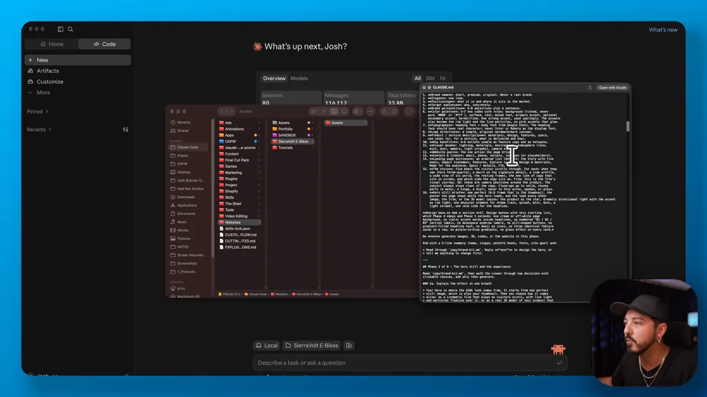
지시서는 작업을 여섯 단계로 나눠요. 화면에 뜨는 단계 제목을 이어 붙이면 아래와 같아요. 단계마다 사람이 할 일은 답하고, 고르고, 승인하는 것뿐이에요.
말로 주문하고 브랜드 키트 만들기
폴더와 지시서가 준비되면 나머지는 평소 말투로 원하는 걸 설명하는 일이에요. 그 전에 입력창 아래 두 가지를 바꿔요. 권한 모드를 'Accept edits'에서 'Bypass permissions'로 바꾸고, 모델을 Opus 5.5로 골라요. 권한 모드를 바꾸면 Claude가 단계마다 허락을 구하지 않고 계속 작업해요.
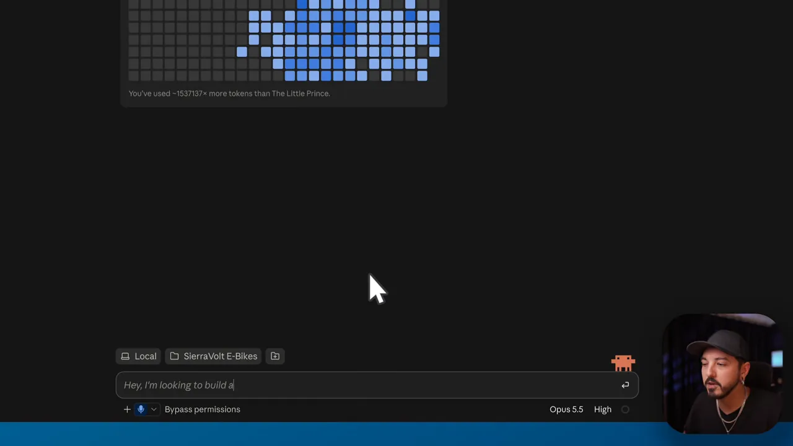
발표자는 마이크 아이콘을 누르고 말로 주문해요. 어떤 지형이든 달리는 전기 자전거 회사 사이트를 만들고 싶다고 해요. 다재다능함과 품질을 몰입감 있는 하이테크 사이트로 보여 달라는 내용이에요. 지시서를 넣어 뒀으니 따라 달라는 말로 끝나요. 길게 쓸 필요는 없어요. 모자란 정보는 Claude가 되물어요.
So, literally, that's all I have to say.
정말 이게 제가 할 말의 전부예요.
— 영상 06:31
1단계: 브랜드 키트
Claude는 지시서를 읽고 1단계 브랜드 키트를 시작해요. 이미 브랜드가 있다고 답하면, 가진 걸 보내 달라며 질문 11개를 번호로 내놓아요. 모르는 항목은 건너뛰어도 되고, 그 칸은 Claude가 채운 뒤 임시값 표시를 달아 둔다고 해요. 실제 자전거 사진이 있으면 끌어다 놓으라는 안내도 있어요.

발표자는 답을 미리 글로 정리해 와서 붙여 넣어요. 브랜드는 SierraVolt E-Bikes, 슬로건은 'Built for the climb'이에요. 주력 모델 Summit은 6,400달러, 가벼운 Ridge는 4,200달러예요. 사이트 목표는 시승 예약과 잠재 고객 연락처 모으기예요. 아래쪽에는 색상 다섯 가지를 hex 코드로 적었고, 폰트는 '굵고 현대적인 것'으로만 남겼어요. 발표자는 이 단계가 사이트가 내 브랜드처럼 보이게 하는 핵심이니 시간을 들여 채우라고 해요.
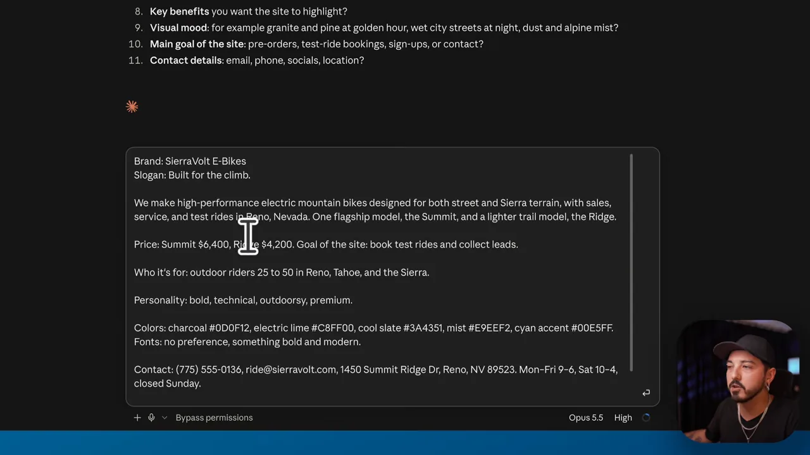
잠시 뒤 Claude는 copy/brand-kit.md를 만들었다고 알려요. 이름, 슬로건, 색상표, 헤드라인과 본문 폰트, 사이트 목표가 요약돼 있어요. 가운데 문단에는 자전거 스펙과 소셜 계정, 로고 방향을 직접 채우고 [placeholder] 표시를 달았다는 설명이 있어요. 맨 아래 입력창에 발표자가 'next'를 치는 중이에요. 확인하고 next라고 답하는 게 다음 단계로 가는 신호예요.
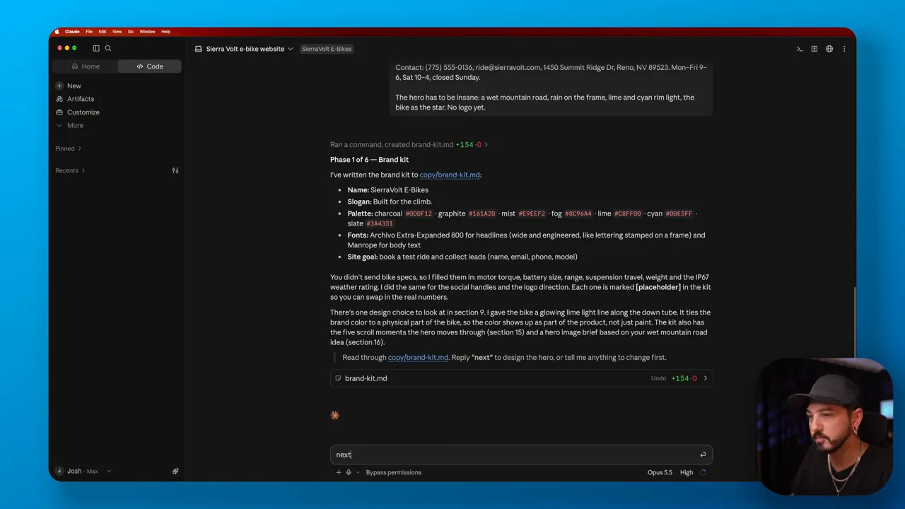
히어로 이미지, 3D 모델, 영상 만들기
2단계는 사이트 첫 화면인 히어로를 정하는 단계예요. Claude는 먼저 완벽한 정지 이미지 한 장에서 출발한다고 설명해요. 그다음 이 이미지를 어떻게 살릴지 세 가지 중에서 묻어요. 스크롤에 맞춰 재생되는 시네마틱 영상, 방문자가 잡고 돌려 볼 수 있는 실제 3D 모델, 또는 둘 다예요.
위쪽 두 번째 문단이 눈여겨볼 부분이에요. 자전거는 3D로 만들기 애매한 물건이라고 해요. 이미지를 3D로 바꾸면 덩어리진 물체는 잘 나오지만, 바큇살·체인·케이블처럼 가늘고 비치는 부품은 녹거나 거미줄처럼 엉기기 쉬워요. 영상에는 그런 문제가 없다는 설명이에요. 선택지마다 대략의 크레딧도 적혀 있어요.
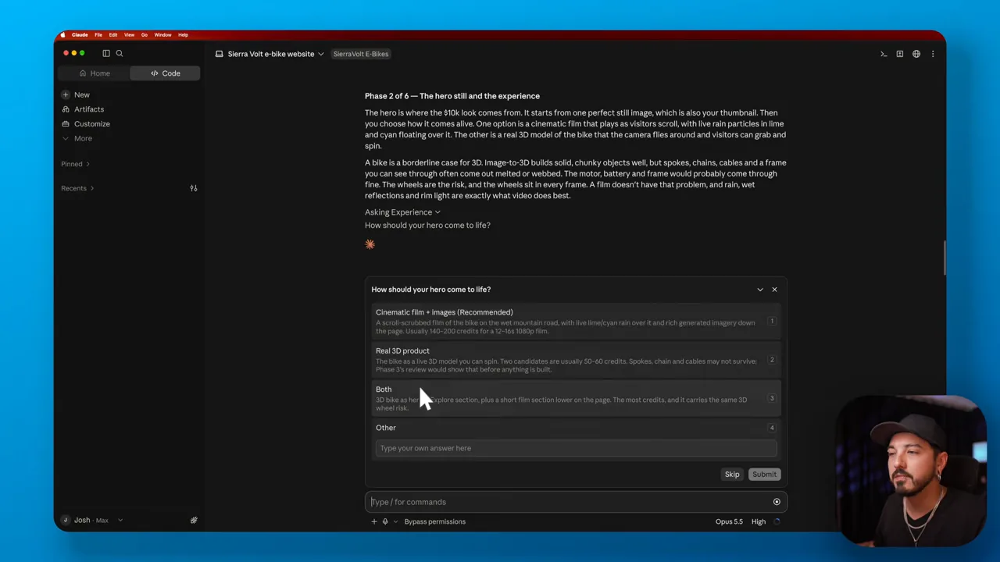
히어로 이미지 후보 고르기
Claude는 Higgsfield 커넥터로 바로 만들지 않고, 크레딧 견적부터 물어요. 화면 가운데 질문을 보면 GPT(Generative Pre-trained Transformer) Image 2 모델로 2k 최고 화질 후보 3장을 만드는 데 약 20크레딧(장당 6.5)이 들고, 남은 잔액이 4,616이라고 적혀 있어요. 발표자는 이렇게 단계마다 승인을 받아서, 모르는 사이에 크레딧이 많이 빠지는 일이 없다고 해요.
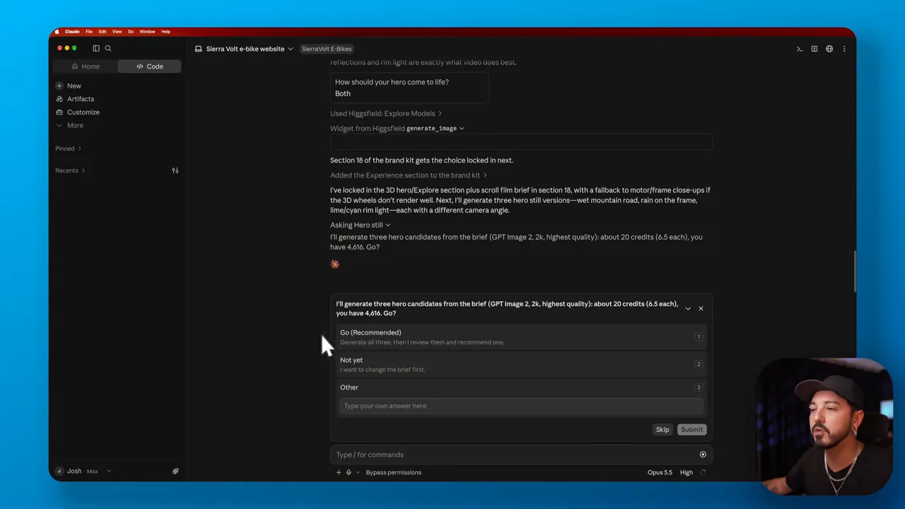
세 장이 나오면 Claude가 직접 비교해요. 모터와 타이어를 확대해 이미지 생성기가 가짜 글자를 넣지 않았는지도 봤다고 해요. 결론은 2번 물웅덩이 반사가 가장 좋고, 1번 산길 사진은 모터 덮개의 가짜 배지를 지우는 데 약 6크레딧이 더 들며, 3번은 배경이 얼룩져서 탈락이에요.
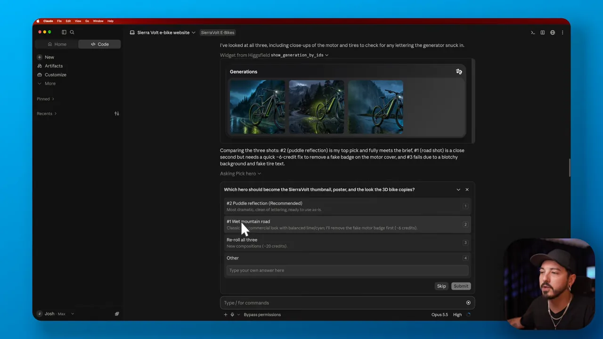
발표자는 작은 미리보기 대신 폴더의 assets 안 원본을 열어 보고, 추천과 달리 1번 '비 젖은 산길'을 골랐어요. 아래가 그 이미지예요. 젖은 도로 위에 프레임을 따라 라임색 빛줄기가 들어간 자전거가 서 있어요. 이 빛줄기는 브랜드 키트에서 브랜드 색을 제품에 입히려고 정한 디자인이에요.
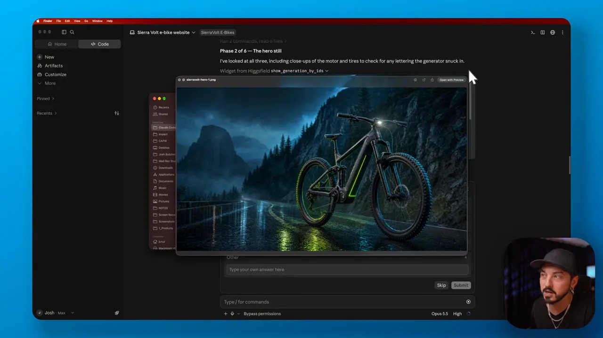
선택이 끝나면 Claude는 같은 분위기의 보조 이미지 몇 장과, 3D 변환용 원본을 따로 만들어요. 회색 배경에 옆모습만 깨끗하게 찍은 제품 사진이에요. 배경이 단순해야 이미지를 3D로 바꿀 때 자전거 모양만 잘 뽑혀요.
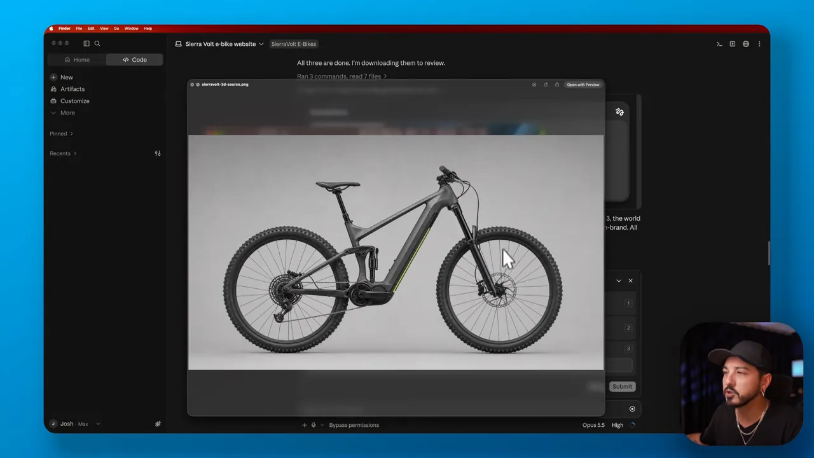
발표자는 다음 단계로 넘어가기 전에 이미지를 충분히 다듬으라고 강조해요. 이미지는 새로 뽑기 싸지만, 3D와 영상은 더 비싸기 때문이에요.
3단계: 3D 모델과 영상
3단계 제목은 'Bring it to life'예요. 질문이 두 개 연달아 나와요. 첫째는 3D 모델이에요. Meshy 7과 Tripo H3.1 두 엔진으로 후보를 하나씩 만들면 약 62크레딧이고, Meshy 7 하나만 만들면 44크레딧이에요. 두 엔진을 쓰면 바큇살과 바퀴가 살아남을 확률이 높다는 게 추천 이유예요.
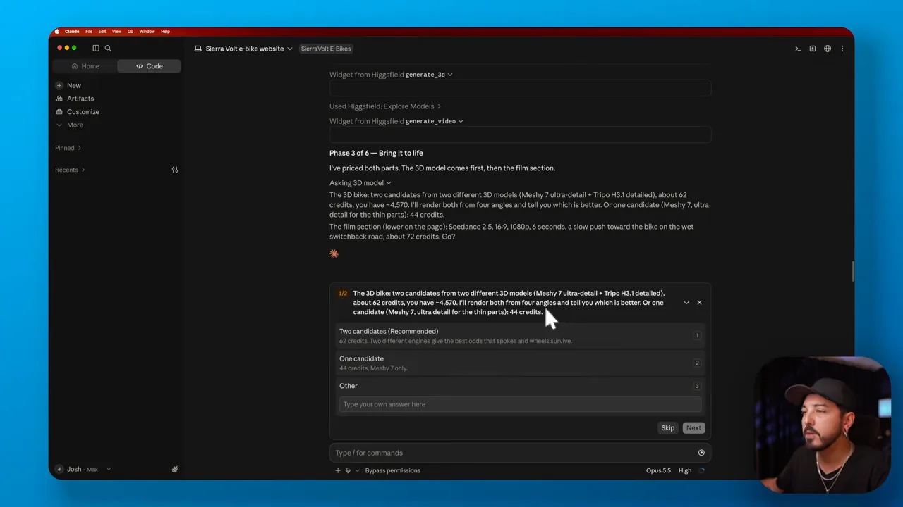
둘째는 영상이에요. Claude는 Seedance 2.5로 16:9, 1080p, 6초짜리를 제안해요. 젖은 굽잇길 위 자전거로 천천히 다가가는 장면이고, 약 72크레딧이에요. 발표자는 제안대로 하지 않고 Other 칸에 직접 써 넣어요. 자전거가 도로에서 바위투성이 산길로 굴러 넘어가며 여러 지형을 보여 주는 장면을 원한다는 내용이에요.

화면에 나온 견적을 한데 모으면 아래와 같아요. 이미지 단계에서 다시 뽑는 비용과 영상 한 편 비용이 세 배 넘게 차이 나요.
3D 모델과 영상 확인하기
생성에는 시간이 걸려서 발표자는 그동안 호스팅을 준비해요(다음 섹션). 돌아오면 두 모델이 다 나와 있어요. Claude는 둘을 브랜드 마감을 입힌 상태로 같은 각도에서 비교해요. Tripo H3.1은 디테일이 선명하고 브랜드 빛줄기도 제대로 빛나지만 파일이 무겁다고 해요. Meshy 7은 가볍지만 빛줄기가 흐리고 타이어와 바큇살이 가시처럼 겹쳐 보인다고 해요. 그래서 Tripo를 추천해요.
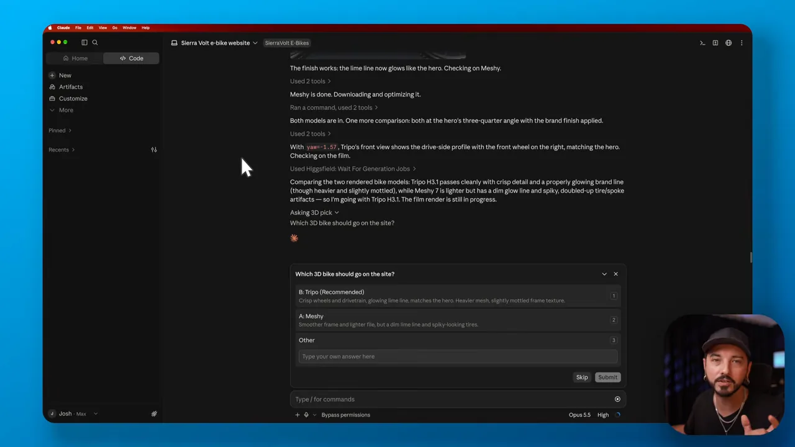
오른쪽 위 브라우저 아이콘을 누르면 Claude가 지금 작업 중인 화면을 앱 안에서 볼 수 있어요. 여기서는 3D 모델 검토용 페이지가 열려 있어요. 옆, 앞, 뒤, 비스듬한 위 네 방향에서 같은 자전거를 보여 줘요. 위쪽 작은 글씨에는 이 모델이 삼각형 44만 7천여 개로 이뤄졌다는 정보가 있어요. 발표자는 사진 한 장에서 몇 분 만에 이런 모델이 나왔다며, 3D 디자이너에게 맡기면 수천 달러가 들 작업이라고 말해요.

영상도 완성돼 있어요. Claude는 영상을 받아 프레임을 뽑아서 직접 검토했다고 해요. 발표자가 주문한 대로 젖은 도로에서 출발한 자전거가 길가 바위 위로 올라타는 장면이 이어져요.
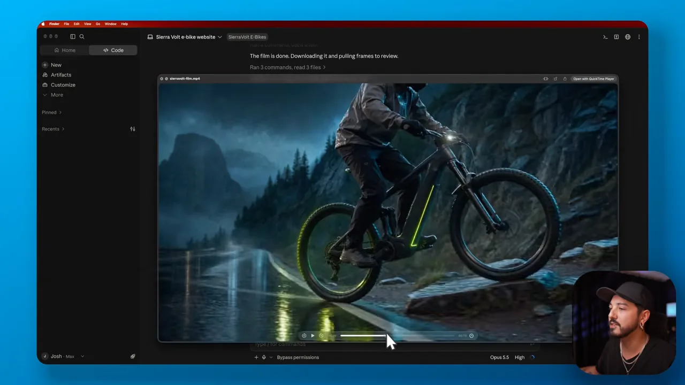
호스팅·도메인 준비와 Hostinger 커넥터
영상 생성을 기다리는 동안 배포 준비를 해 둬요. 사이트가 완성되면 프롬프트 한 번으로 올리기 위해서예요. 발표자는 Hostinger를 써요. 호스팅 플랜에 가입하면 무료 도메인 하나가 딸려 와요.
온보딩에서 고를 것
가입하면 Hostinger의 온보딩 화면으로 넘어가요. 첫 질문에서 새 사이트 만들기가 아니라 '기존 사이트 이전'을 골라요. 사이트는 Claude에서 만들고 있기 때문이에요. 다음 화면은 사이트를 어떻게 가져올지 묻는데, 가운데 '웹사이트 파일 업로드'를 골라요. 각 카드 아래에는 지원 형식이 적혀 있어요. 가운데 카드는 HTML(HyperText Markup Language)·CSS(Cascading Style Sheets) 정적 사이트, WordPress·PHP(PHP: Hypertext Preprocessor), Node.js 앱을 받아요. 실제 업로드는 Claude가 하니 사람이 파일을 올릴 일은 없어요.
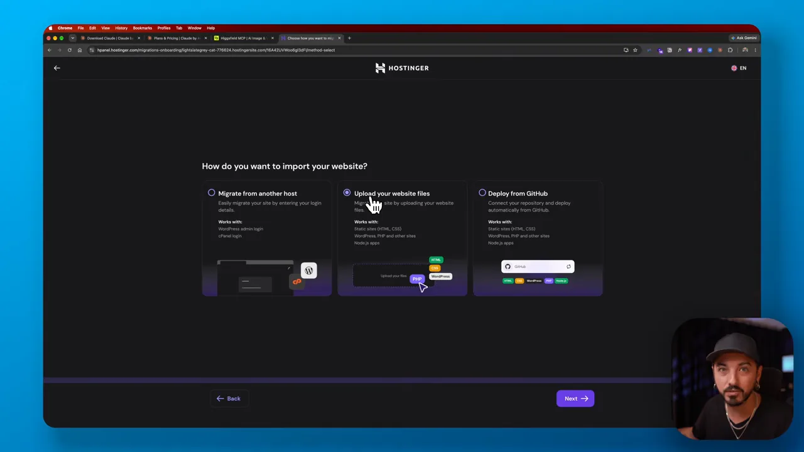
다음 화면에서 무료 도메인을 골라요. 발표자는 sierravoltebikes.com을 검색해 비어 있는 걸 확인하고 등록했어요. 그 뒤 파일 업로드 화면이 나오지만 여기서는 Hostinger 로고를 눌러 설정을 빠져나와요. 관리 화면인 hPanel의 Websites 메뉴에 새 플랜과 도메인이 '연결 중'으로 보이면 이 단계는 끝이에요.
Hostinger 커넥터 연결하기
Claude가 호스팅을 직접 다루려면 커넥터가 하나 더 필요해요. Higgsfield 때와 같은 곳(Customize → Connectors)에서 Hostinger를 검색하면 Hostinger Connector 페이지가 나와요. 제목 옆 'Community' 표시와 그 아래 안내문이 눈여겨볼 부분이에요. 커뮤니티 커넥터는 자동 검토만 거쳤고 Anthropic이 검증하지 않았다는 안내예요. 오른쪽 정보 칸에는 만든 곳이 Hostinger이고 커넥터 주소가 https://mcp.hostinger.com/이라고 적혀 있어요. 본문에는 웹사이트 배포, 도메인·DNS(Domain Name System), VPS(Virtual Private Server), 이메일까지 다룰 수 있다고 나와요.
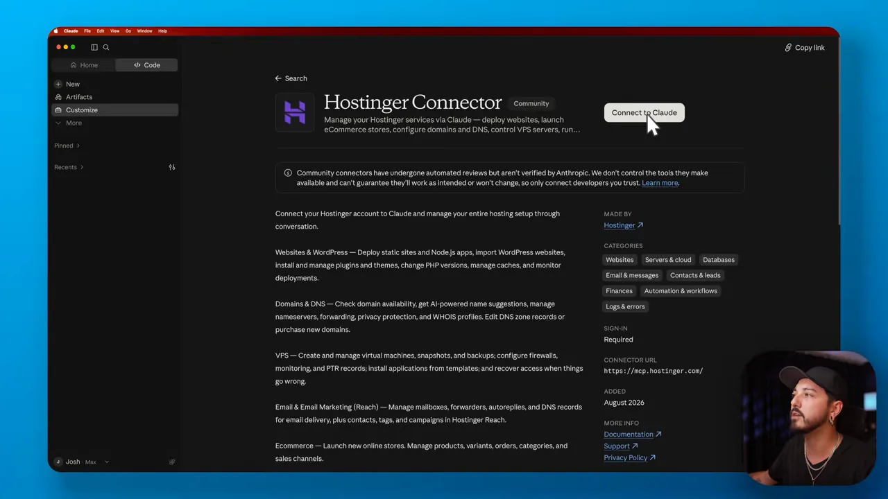
브라우저에서 이미 Hostinger에 로그인돼 있으니 Allow만 누르면 돼요. 앱으로 돌아오면 커넥터 목록에 Higgsfield와 Hostinger가 둘 다 연결된 상태로 보여요. 이제 사이트가 준비되는 대로 Claude가 배포할 수 있어요.
사이트 생성과 첫 결과
3D 모델과 영상을 확정하고 next라고 하면 4단계, 사이트 빌드가 시작돼요. 이제 Claude 손에는 브랜드 키트, 모든 미디어, 지시서가 다 있어요. 발표자는 지시서가 없으면 Claude가 이 재료를 매끄럽게 엮는 방법을 모를 거라며, 여기가 '마법이 사는 곳'이라고 해요. 첫 버전이 나오기까지 약 25분 걸렸어요.
완료 보고에서 꼭 읽을 것
Claude는 끝나면 검증한 항목과 'Things to know'를 정리해 줘요. 위쪽에는 끌어서 돌리기, 핫스팟, 조명 세 가지가 작동하고, 휴대폰에서 옆으로 밀리지 않는다는 확인이 있어요. 그 아래 세 줄이 중요해요.
- 예약 폼에는 서버가 없어요. 방문자의 메일 앱을 열어 ride@sierravolt.com 앞으로 내용을 채워 줄 뿐이에요. 방문자가 보내기를 눌러야 도착해요. 자동으로 받는 방법은 README에 적어 뒀다고 해요.
- 스펙은 아직 지어낸 값이에요. 소셜 링크, 무료 정비, 45분 시승도 마찬가지예요. 브랜드 키트와 README에 임시값으로 표시돼 있고, 진짜 숫자를 보내 달라고 해요.
- 장면 하나를 바꿨어요. 옆모습 클로즈업에서는 앞바퀴가 늘 글자 밑에 깔려서, 모터 클로즈업을 뒤쪽에서 찍는 구도로 바꿨대요. 이 변경은 brand-kit.md에 기록했어요.
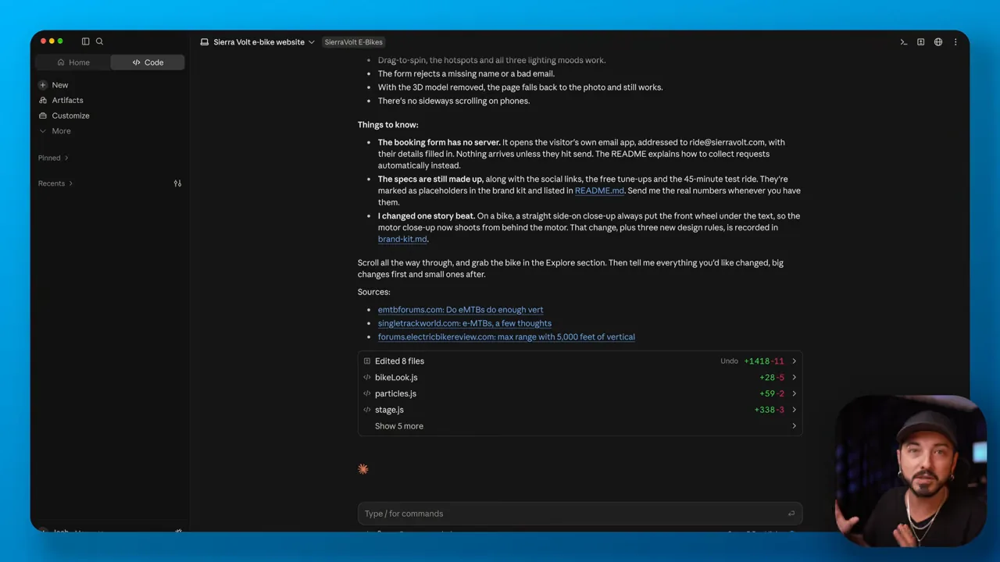
아래쪽 Sources에는 Claude가 출처로 단 전기 산악자전거 포럼 글 세 개가 있어요. 그 밑에는 파일 8개를 고쳤다는 요약이 있어요.
완성된 사이트 둘러보기
미리보기는 오른쪽 위 브라우저 아이콘으로 열어요. 첫 화면에는 1번으로 고른 산길 이미지 위에 'BUILT FOR THE CLIMB.'이 크게 올라가요. 그 아래에는 '스트리트와 시에라를 위한 고성능 전기 산악자전거, 네바다 리노에서 만들고 시승했다'는 소개와 시승 예약 버튼이 있어요. 발표자는 마우스를 움직이면 화면이 따라 움직여서 반응이 살아 있다고 해요.
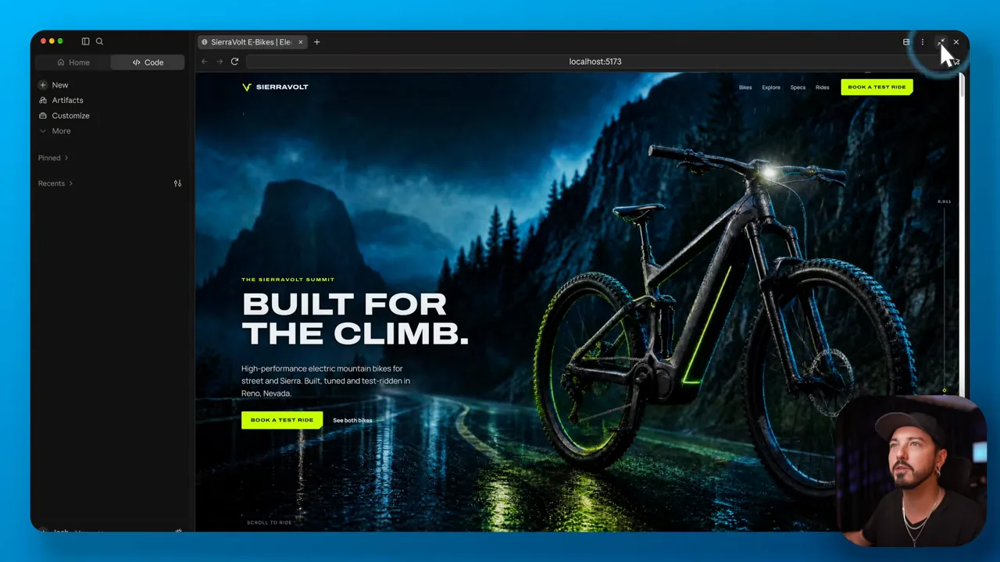
스크롤을 내리면 자전거 둘레로 전류가 한 바퀴 돌고, 검은 배경에 3D 자전거가 나타나요. 스크롤에 맞춰 카메라가 자전거의 여러 부분을 차례로 비추고, 각 장면에 판매 포인트 문구가 붙어요. 아래 장면은 모터를 비추며 오른쪽 아래에 '90 NM. BARELY'를 띄운 순간이에요. 화면에 빗방울 같은 입자도 떠다녀요.
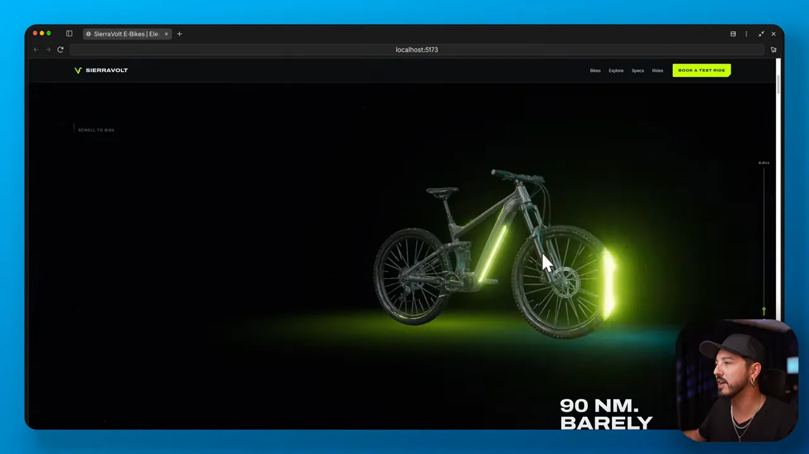
스펙 구간에는 숫자가 움직이는 그래프가 있어요. 왼쪽 큰 숫자와 설명문은 한 번 충전으로 오를 수 있는 높이를 말하고, 라임색 선이 오른쪽 위 8,911ft까지 올라가요. 단, 앞의 완료 보고대로 이런 숫자는 Claude가 채운 임시값이에요.
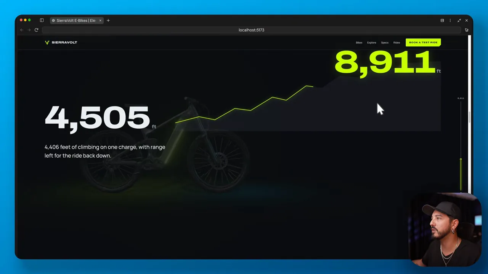
더 내려가면 3단계에서 만든 영상 구간이에요. 자전거가 도로에서 바위 위로 올라가는 장면이 화면 위쪽에 흐르고, 그 아래 진행 막대에 'ROAD', 'TRAIL', 'LEDGE'가 표시돼요. 스크롤이 영상의 진행을 정하는 구조예요. 이어서 'TURN IT OVER. LOOK CLOSER.' 구간이 시작돼요.
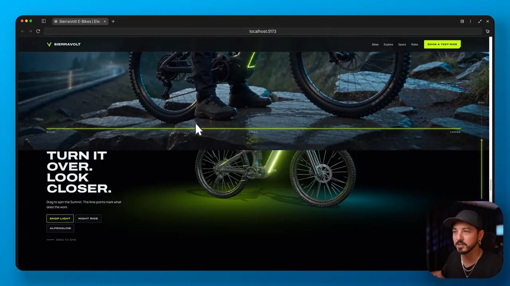
'TURN IT OVER' 구간에서는 방문자가 3D 자전거를 끌어서 직접 돌려 볼 수 있어요. 자전거 위의 라임색 점이 핫스팟이에요. 점에 마우스를 올리면 '160 mm fork'처럼 부품 설명이 떠요. 왼쪽의 'SHOP LIGHT', 'NIGHT RIDE', 'ALPENGLOW' 버튼은 조명 분위기를 바꿔요.
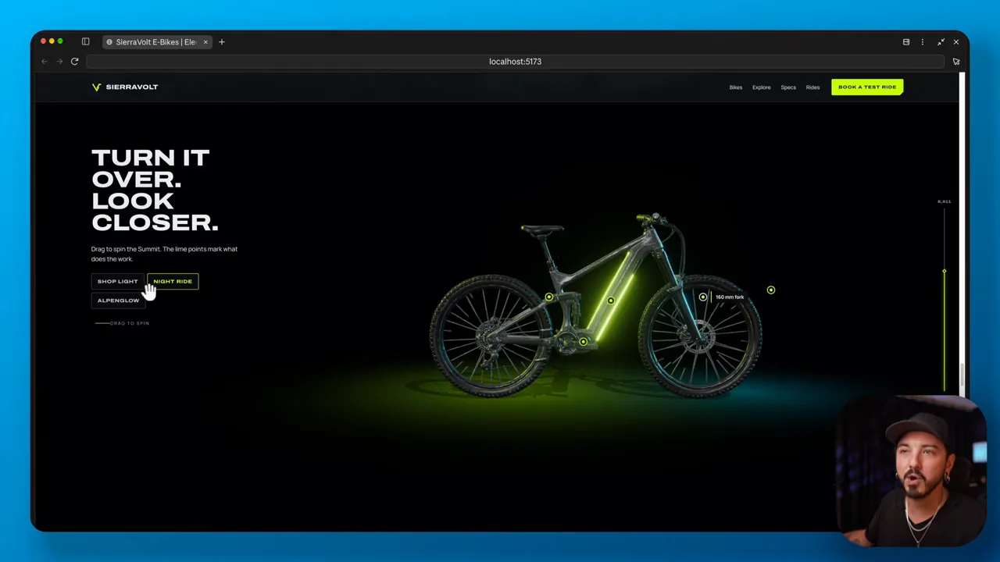
그 뒤로는 모델별 카드(마우스를 올리면 반응해요), 두 모델을 나란히 비교하는 'THE NUMBERS.' 표, 시승 예약 구간, 문의 폼, 푸터가 이어져요. 'THE NUMBERS.'는 모터, 배터리, 주행 거리, 무게 같은 숫자를 모아 둔 표이고, 오른쪽 위에 'SUMMIT'·'RIDGE' 전환 버튼이 있어요.
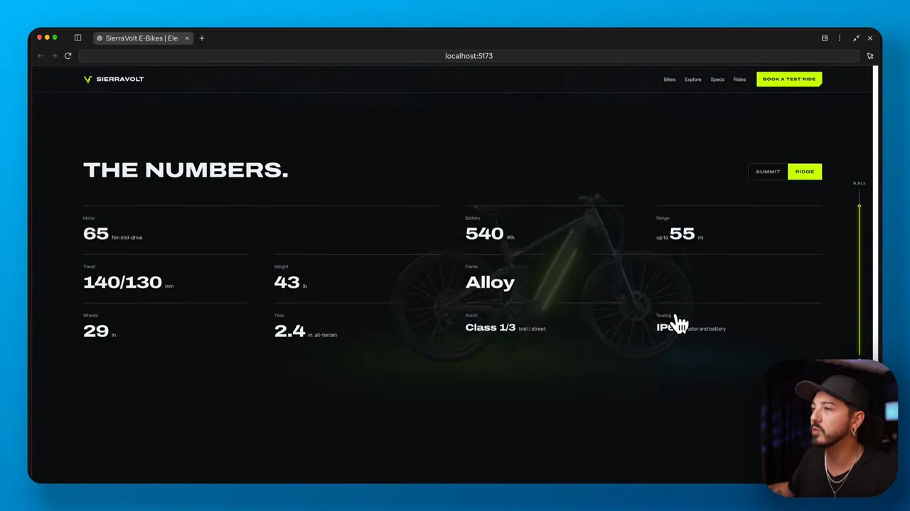
위에서 아래까지 구간과 재료를 정리하면 이래요.
| 구간 | 화면에 나온 것 | 어디서 온 재료인가요 |
|---|---|---|
| 첫 화면 | 'BUILT FOR THE CLIMB.' 제목, 마우스를 따라 움직이는 화면 | 슬로건(1단계), 히어로 이미지(2단계) |
| 스크롤 3D | 전류 효과 뒤 3D 자전거, 부분마다 판매 문구 | Tripo 3D 모델(3단계) |
| 스펙 그래프 | 4,505ft에서 8,911ft로 올라가는 그래프, 주행 모드 소개 | Claude가 채운 임시 스펙 |
| 영상 구간 | 도로 → 바위 산길 영상, 'ROAD'·'TRAIL'·'LEDGE' 진행 막대 | Seedance 영상(3단계) |
| 직접 돌려 보기 | 끌어서 돌리기, 핫스팟, 조명 버튼 세 개 | 같은 3D 모델 |
| 모델·스펙 비교 | 마우스에 반응하는 카드, Summit·Ridge 비교표 | 가격(1단계), 임시 스펙 |
| 시승 예약·문의 | 두 가격대, 문의 폼, 푸터 | 사이트 목표·연락처(1단계) |
발표자는 한 번의 프롬프트로 이 정도가 나온 게 인상적이라고 말해요. 이제부터는 이 출발점을 다듬는 일이 남았다고 해요.
대화로 고치고 배포하기
5단계는 수정이에요. 발표자는 스크롤하다가 3D 자전거의 그림자가 어느 순간 갑자기 툭 나타나는 걸 발견했어요. 그림자가 없던 프레임과 생긴 프레임을 캡처해서 대화창에 붙이고, 부드럽게 바꿔 달라고 평소 말투로 부탁해요. 미리보기 창을 좁히니 사이트가 휴대폰 화면처럼 한 줄로 바뀌는데, 발표자는 모바일에서도 깔끔하다고 해요.
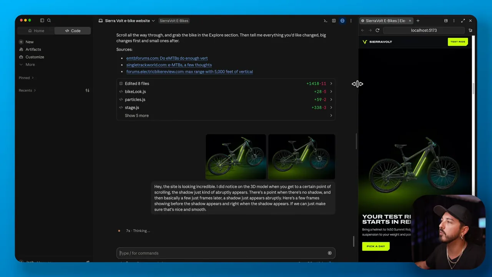
Claude의 답을 보면 원인 찾기 과정이 드러나요. 바닥의 라임·청록 빛 웅덩이와 그림자가 둘 다 반투명 레이어예요. 카메라가 위로 올라가면 브라우저가 거리를 기준으로 정하는 그리기 순서가 뒤집혀서, 그림자가 빛 아래로 깔렸어요. 사라진 게 아니라 가려졌던 거예요. Claude는 그림자를 항상 맨 위에 그리도록 고친 뒤, 같은 스크롤 위치를 다시 찍어 확인하고 콘솔 오류와 빌드까지 점검했다고 보고해요.

발표자는 이렇게 사람에게 하듯 '이건 좋은데 저건 바꿔 줄래요?', '이 초록색 말고 다른 톤으로 해 줄래요?'처럼 주고받는 게 수정 단계의 전부라고 말해요. 마음에 들 때까지 몇 번이든 반복하면 돼요.
6단계: 배포
준비가 되면 'Yes, publish it'을 골라요. 아래 화면 위쪽에는 발표자가 다른 구간의 그림자도 같은 식으로 고쳐 달라고 한 요청이 하나 더 보여요. 그 아래 'Phase 6 of 6 — Publish'에서 Claude는 Hostinger 커넥터가 연결돼 있다고 확인해요. 그리고 계정에 오늘 만든 sierravoltebikes.com 사이트가 호스팅 플랜과 함께 있다는 걸 찾아내요. 사람은 올릴 도메인만 고르면 돼요.
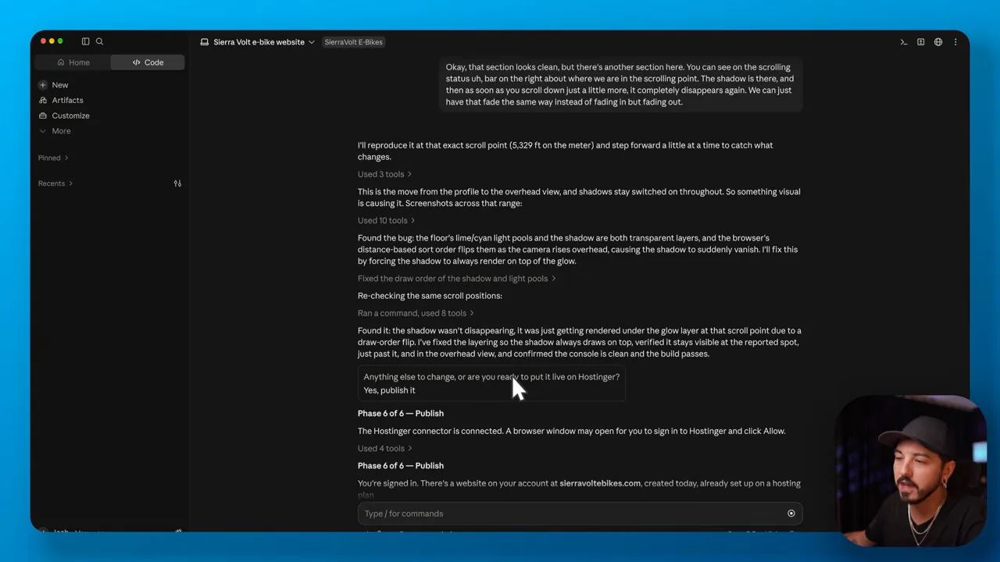
도메인을 고르면 잠시 뒤 사이트가 공개돼요. 앱 안 브라우저의 주소창이 sierravoltebikes.com으로 바뀌고, 미리보기와 같은 'BUILT FOR THE CLIMB.' 첫 화면이 떠요. 일반 브라우저에 이 주소를 넣어도 똑같이 열려요.
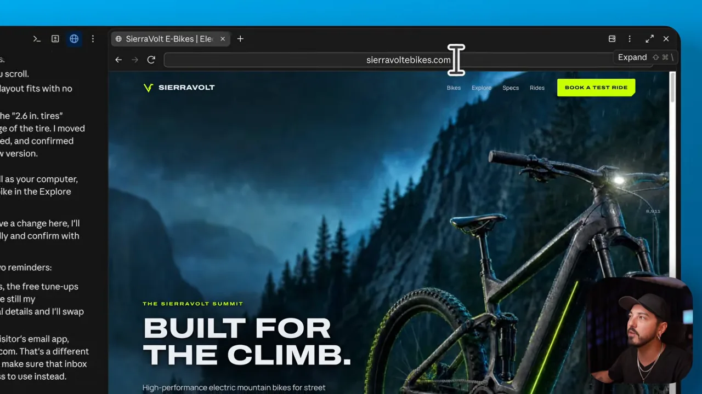